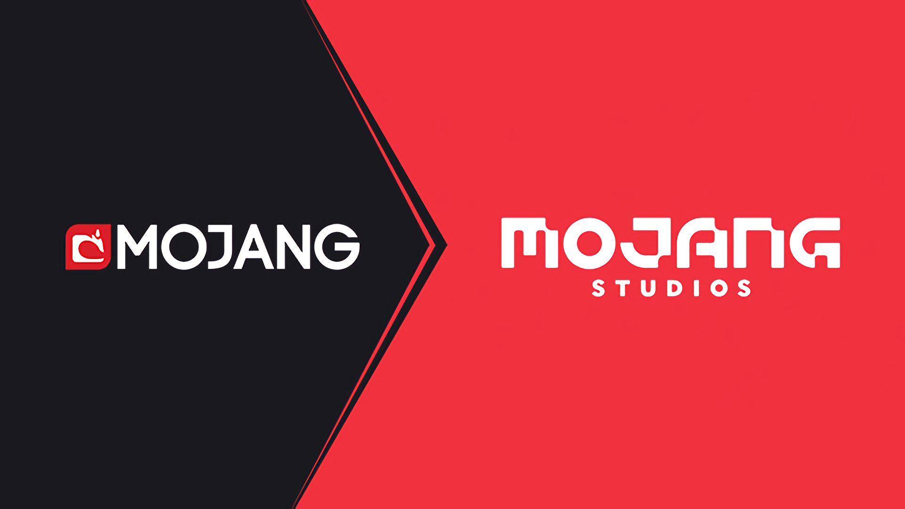
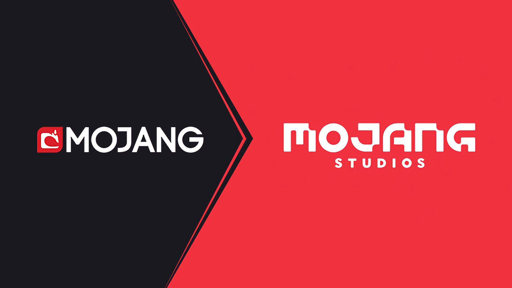

Minecraft initially released on May 17th 2009, but this initial version of the game was worked on so much that it became almost unrecognizable making this version of it to become called "Minecraft Classic". The full release of the current Minecraft has been on November 18th 2011. Developed by "Mojang studios", it quickly became a best-selling video game which attracted the eyes of "Microsoft", which ended with them buying Minecraft and Mojang Studios' assets for 2.5 billion US dollars. The game itself is a 3D sandbox where players interact with a fully modifiable three-dimensional environment made of blocks and entities. Its diverse gameplay lets players choose the way they play, allowing countless possibilities.
 
